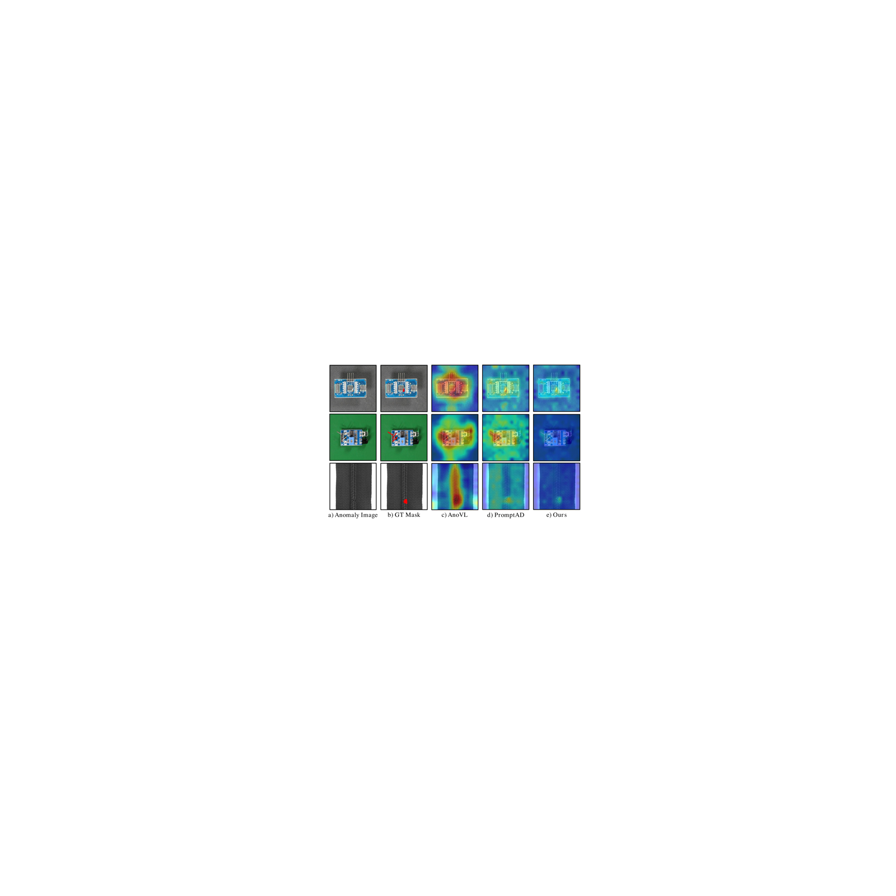
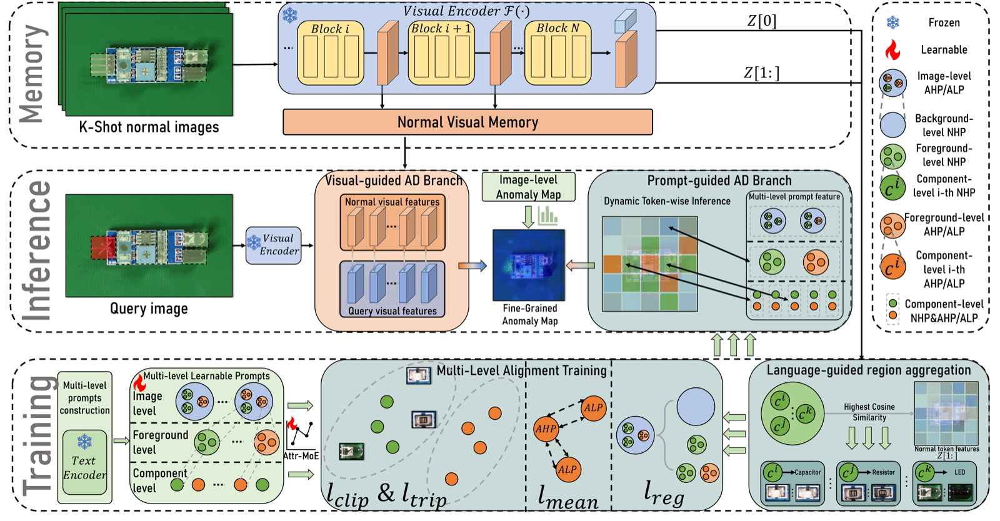
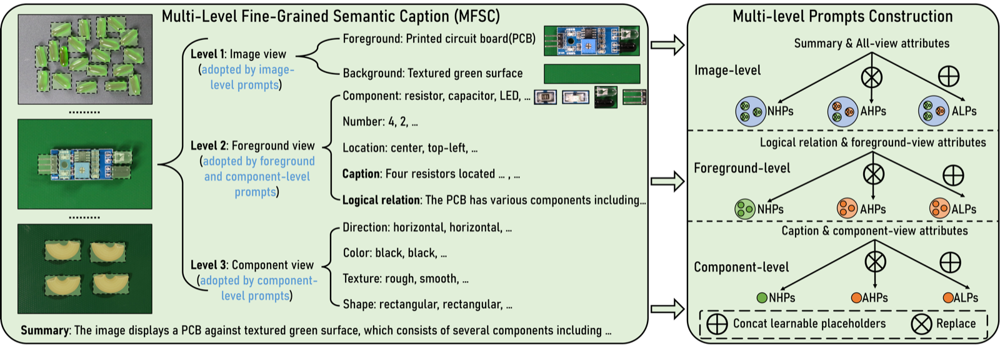
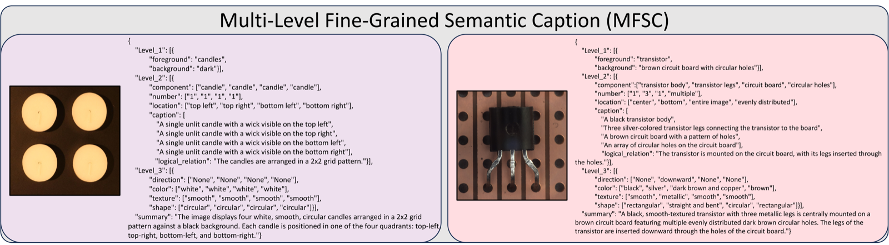
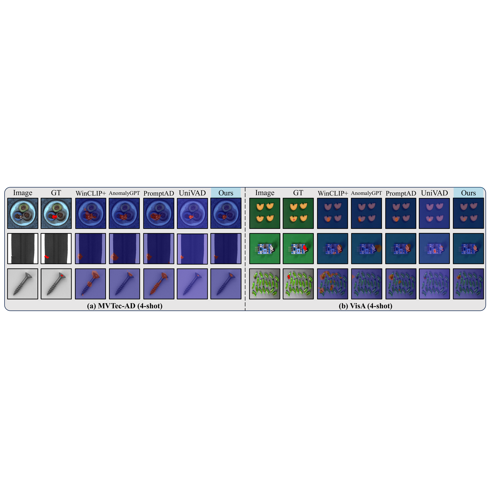
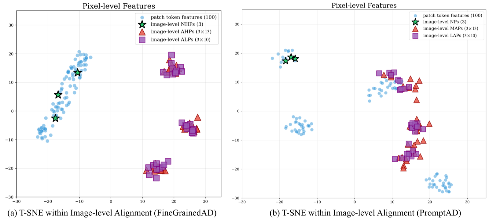

Component-level anomaly localization by aligning multi-level fine-grained textual semantics with visual regions — with only a handful of normal samples.
Tencent Youtu Lab

Few-shot anomaly detection (FSAD) methods identify anomalous regions with few known normal samples, typically by computing feature similarity between text descriptions and images using pre-trained vision-language models. However, lacking detailed textual descriptions, existing methods can only pre-define image-level descriptions to match each visual patch token — causing semantic misalignment between image descriptions and patch-level visual anomalies, and sub-optimal localization.
We propose the Multi-Level Fine-Grained Semantic Caption (MFSC), providing multi-level, fine-grained textual descriptions for existing anomaly detection datasets through an automatic construction pipeline. Building on MFSC, we present FineGrainedAD, a framework with two components: Multi-Level Learnable Prompt (MLLP), which introduces fine-grained semantics into multi-level learnable prompts via an automatic replacement-and-concatenation mechanism, and Multi-Level Semantic Alignment (MLSA), which designs a region aggregation strategy and multi-level alignment training so that learnable prompts better align with their corresponding visual regions. Experiments demonstrate superior overall performance in few-shot settings on MVTec-AD and VisA.
FineGrainedAD trains only 60K parameters on a frozen CLIP-B backbone, uses no auxiliary training data, and runs at 23.3 ms per image.
Two cooperating branches: a Vision-guided Anomaly Detection (VAD) branch compares CLIP features of few-shot normal images against the query image, while a Prompt-guided Anomaly Detection (PAD) branch optimizes multi-level learnable prompts via alignment training and language-guided region aggregation, then performs dynamic token-wise inference for accurate anomaly perception within each visual component.

An automatic pipeline that constructs image-, entity-, and attribute-level textual descriptions for anomaly detection datasets — supplying the fine-grained semantics that MVTec-AD, VisA, and RealIAD lack out of the box.
Injects fine-grained semantics into multi-level learnable prompts through an automatic replacement-and-concatenation mechanism, bridging coarse image-level templates and component-level descriptions.
A language-guided progressive region aggregation strategy plus multi-level alignment training that pull each learnable prompt toward its corresponding visual region in feature space.
MFSC decomposes each object category into its components and attributes, then assembles multi-level prompts through replacement and concatenation — no manual annotation required.


Against 4-shot baselines on MVTec-AD and VisA, FineGrainedAD suppresses false activations on normal regions and localizes defects at the component level.


Image / pixel AUROC on MVTec-AD and VisA. Methods above the divider use auxiliary training data; FineGrainedAD uses none.
| Method | Backbone | Trainable | Auxiliary | MVTec 1-shot | MVTec 2-shot | MVTec 4-shot | VisA 1-shot | VisA 2-shot | VisA 4-shot | Time (ms) |
|---|---|---|---|---|---|---|---|---|---|---|
| AnomalyGPT | ImageBind-H + Vicuna (8B) | 113M | ✓ | 94.22 / 95.45 | 94.38 / 95.82 | 96.62 / 96.11 | 89.96 / 96.39 | 90.34 / 96.78 | 90.15 / 97.11 | 3595.4 |
| KAG-Prompt | ImageBind-H + Vicuna (8B) | 83M | ✓ | 92.33 / 95.83 | 93.47 / 96.33 | 94.03 / 96.69 | 91.37 / 96.31 | 92.11 / 97.01 | 92.41 / 97.43 | 3595.4 |
| INP-Former | DINOv2-B + Decoder (155M) | 69M | ✓ | 93.42 / 95.93 | 93.89 / 96.27 | 95.44 / 96.67 | 90.24 / 96.31 | 92.33 / 96.95 | 93.24 / 97.38 | 47.3 |
| PatchCore | WideResNet-50 (69M) | 69M | ✗ | 83.41 / 92.00 | 86.32 / 93.34 | 88.88 / 94.31 | 79.95 / 95.40 | 81.64 / 96.12 | 85.37 / 96.81 | 73.2 |
| WinCLIP+ | CLIP-B (208M) | 0 | ✗ | 93.70 / 93.60 | 93.70 / 93.80 | 95.30 / 94.20 | 83.82 / 94.73 | 83.41 / 95.15 | 84.11 / 95.25 | 23.3 |
| PromptAD | CLIP-B (208M) | 5K | ✗ | 89.87 / 95.11 | 93.14 / 95.46 | 94.17 / 95.73 | 83.62 / 96.25 | 85.70 / 96.80 | 86.02 / 96.96 | 23.3 |
| FineGrainedAD (Ours) | CLIP-B (208M) | 60K | ✗ | 91.04 / 95.49 | 93.66 / 96.08 | 94.51 / 96.71 | 84.16 / 96.42 | 86.16 / 96.97 | 86.95 / 97.54 | 23.3 |
Each cell reports image-level / pixel-level AUROC (%). Terracotta marks the best pixel-level result in that column across all methods, including those trained with auxiliary data. FineGrainedAD achieves the best pixel-level AUROC on MVTec-AD (4-shot) and VisA (1- and 4-shot) while training only 0.28% of parameters and using no auxiliary data. Results on RealIAD and full comparisons are in the paper.
If you find FineGrainedAD useful in your research, please consider citing:
@article{fan2026finegrainedad,
title = {Towards Fine-Grained Vision-Language Alignment for Few-Shot Anomaly Detection},
author = {Yuanting Fan and Jun Liu and Xiaochen Chen and Bin-Bin Gao and Jian Li
and Yong Liu and Jinlong Peng and Chengjie Wang},
journal = {Pattern Recognition},
volume = {178},
pages = {113316},
year = {2026},
issn = {0031-3203},
doi = {https://doi.org/10.1016/j.patcog.2026.113316}
}